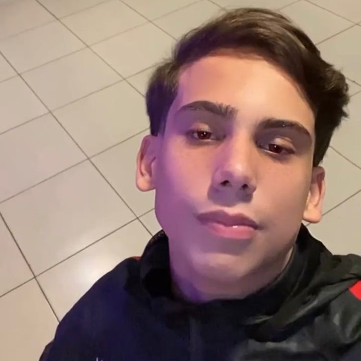
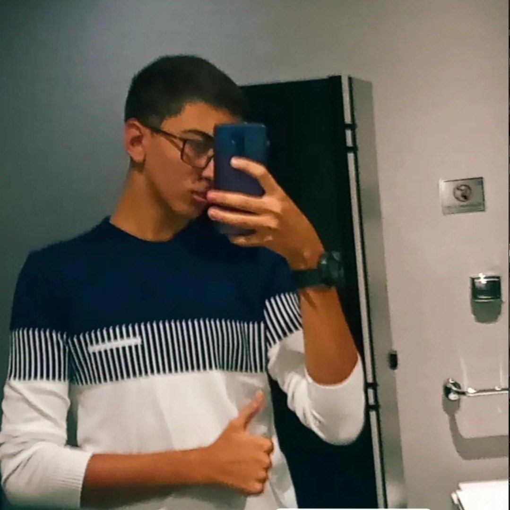
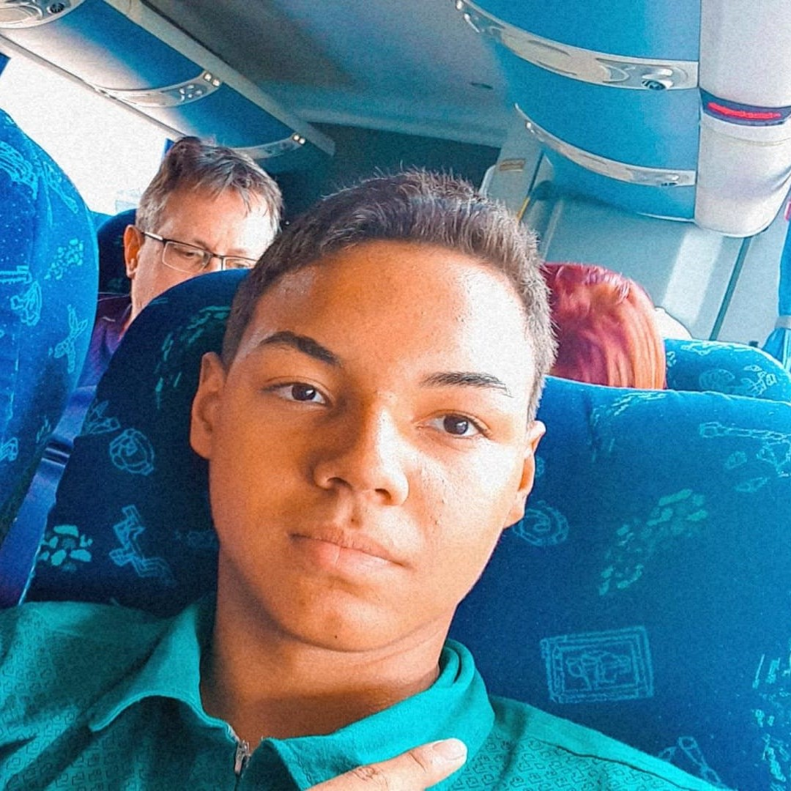
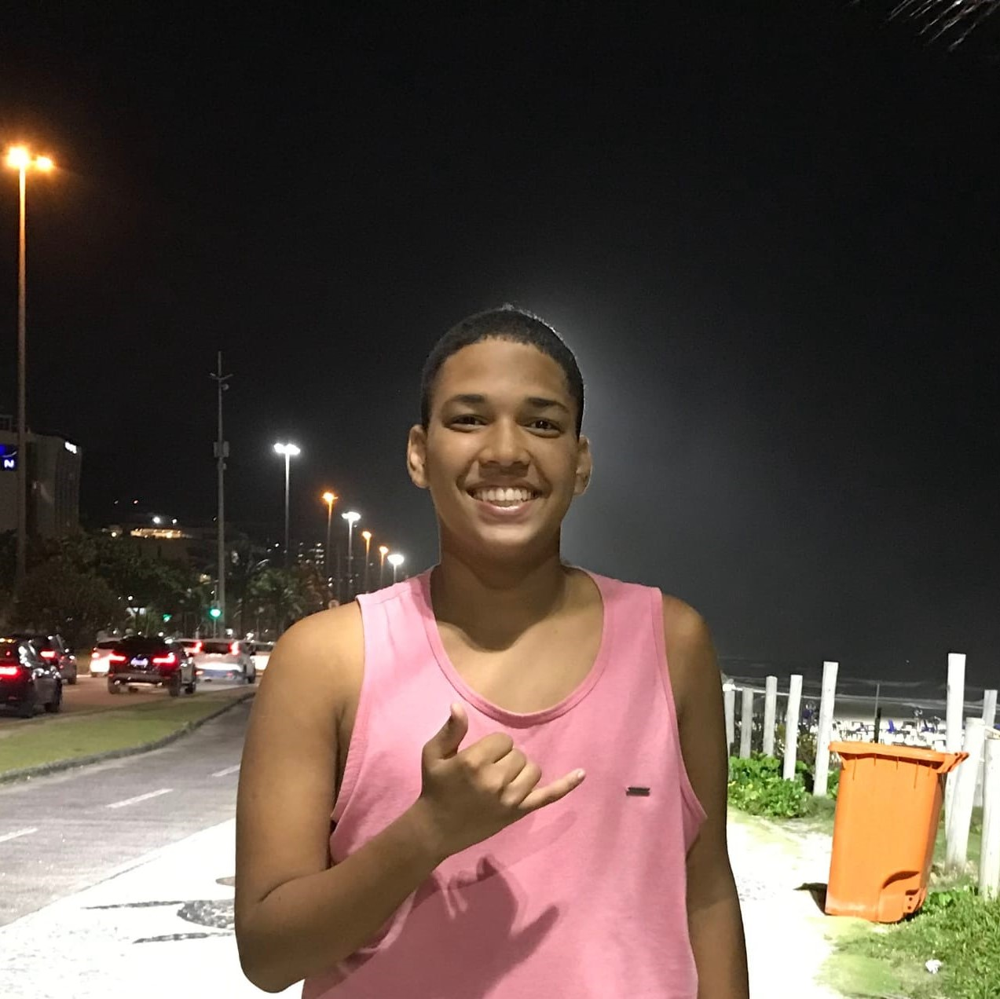

.png)
Meu nome é Arthur, e eu tenho 16 anos. Eu pratico alguns exercícios, eu faço futebol, e faço academia. Entrei no curso da Resilia, e desde então desenvolvi muito interesse na área de programação,sempre empenhado em dar meu melhor e aprender coisas de fora.
Meu nome é Gustavo Ramos, nasci em 25 de julho de 2006 no Rio de Janeiro. Tenho uma família gigante, o nome da minha mãe é Kaciene e da minha irmã Fernanda. Quando pequeno eu tinha um aquário, cheio de peixinhos, mas acabei dando muita comida para eles, e acabaram morrendo, fiquei muito mal. Sou designer, gosto de futebol e amo ouvir música, ouço o dia inteiro. Tenho medo de altura e de cobra
Meu nome é Raphael tenho 15 anos nome da minha mãe é Paula, e do meu pai é Bruno. Eu gosto de jogar bola, soltar pipa etc. Minha família me considera um cara atípico pois se colocar uma bola e um celular na minha frente eu vou escolher a bola.
 <Meu nome é Kauan tenho 14 anos o nome da minha mãe é Beth , o do meu pai é Max e o da minha irmã é rayanne. Tudo oque eu faço no meu dia é dormir e ficar acordado, eu toco teclado/piano, escaleta e ocarina. O nome do meu melhor amigo é ramom jogamos todos os dias juntos e conversamos. Faço um curso da resilia de programação e aprendo cada aula muito.
Meu nome é Tiago, tenho 14 anos e nasci no em Duque de Caxias no Rio de Janeiro. Tenho uma mãe que se chama Mara e um irmão que se chama Lucas. Gosto muito de jogar no computador e no celular. Quando eu era pequeno eu quase morri esmagado por uma estante, mas graças a Deus não aconteceu nada
>>>>>>> c1fe6b5881a503b6f212577592c88ba076ac679a